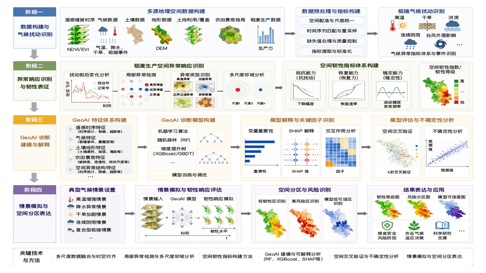

研究项目 · Research Portfolio
科研项目 Research Projects
省级项目 · Provincial

江苏省卓越博士后计划
Jiangsu Excellent Postdoctoral Program
课题名称 · Research Topic
极端气候扰动下稻麦生产空间韧性的地理空间智能诊断与模拟研究
Geospatial-intelligence diagnosis and simulation of the spatial resilience of
rice–wheat production under extreme climate disturbance
查看项目详情 · View details
研究脉络 · Research continuum
2022 - 2023
大油作为: Oily Sludge Remediation Expert
Oily sludge remediation services combining hot-washing equipment, biosurfactants, and microbial agents.
2021.09 - Present
Shaanxi Smart Agricultural Decision-Making System and Big Data Analysis Platform
Big-data analysis and decision support for dryland agriculture and smart orchards.
2020.09 - Present
Xinjiang Cotton Decision Management Support System
GIS-based support for cotton production, plot management, field tasks, and agronomic decisions.
2017.04 - 2018.05
Remote Sensing Monitoring and Early Warning System of Cyanobacteria Bloom in Dianchi Lake
Remote sensing retrieval, hydrodynamic modeling, and visual simulation of cyanobacteria bloom drift.
2017.04 - 2018.05
Visualization of Chl-a Concentration in Dianchi Lake
Grid-based Chl-a concentration simulation and VTK visualization under hydrodynamic conditions.
2017.04 - 2018.05
Visualization of Flow Field in Dianchi Lake
Vector-arrow visualization of simulated lake flow direction and velocity.
Software Copyright
3D Modeling and Analysis System of Underground Space
Urban underground 3D modeling, mesh generation, borehole data management, and spatial analysis.
2017.04 - 2018.05
Groundwater Vulnerability Assessment in Pizhou City
Groundwater vulnerability assessment and mapping based on ArcGIS, C#, and expert-weighted evaluation.